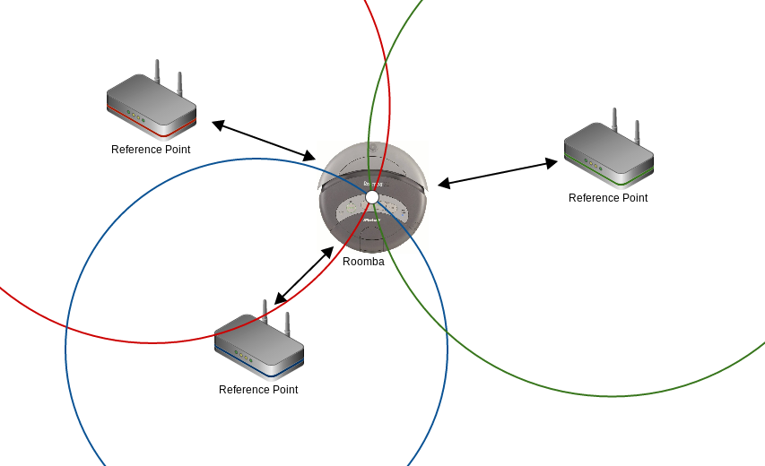

2.0 Problem
2.1 Sensing
First and foremost, the Roombas must be able to retrieve data about their surroundings. They must be able to reliably detect obstacles and take accurate measurements of the positions of these obstacles. The Roombas might have to distinguish between different types of obstacles, such as walls and chairs, or even people who could be moving around the area.
2.2 Exploration
An efficient strategy for exploring an area must also be devised. Each Roomba should have a set plan that it follows, with appropriate actions to take if it finds a wall or detects that it has hit a dead end. The Roombas should avoid backtracking if possible, and aim to collect the most data in the shortest amount of time.
2.3 Coordination
The project will involve multiple Roombas mapping an area. These Roombas must each have a strategy that accounts for the existence of the other Roombas; two Roombas should not re-map the same area, and if two Roombas area heading for the same location, one should break off to explore somewhere else.
2.4 Communication
In order to work together, the Roombas must be able to exchange information between themselves. This includes data such as their current position and orientation, where they are headed, and what they have mapped already. The map data must also be transferred to the Android smartphone so that a user can view the collected data.
Once the methods of communication are established, communication protocols must be established. Data formats must be created that encapsulate all required information while being succinct to reduce the amount of transferred data.
2.5 Position Tracking
The most critical problem to overcome is getting accurate position data from the Roombas. Since the objective of the system is to map out a region, the Roombas cannot use any landmarks or maps to orient themselves, as it is assumed that none exist. The Roombas must keep track of their position and adjust it correctly as they move around the area, minimizing accumulated error that would create inconsistencies or inaccuracies in the generated map.
3.0 Approach
The units used in the following sections are millimeters for distance and degrees for angles, unless stated otherwise.
3.1 Sensing
For the Roombas to be able to navigate and for a map to be created, sensor data about the physical surroundings needs to be collected at a regular interval. This data is collected via multiple sensors, both integrated into the Roomba (via SCI) and also attached directly to the micro-controller.
3.1.1 Roomba Bump Sensor
The Roomba has a plastic bumper on its front that depresses towards the robot when the Roomba runs into a wall. The state of the bumper sensors can be retrieved using the Sensors command (opcode 142), which takes one data byte representing the sensor information to retrieve (1-3 for specific packets, or 0 for all). The data for bump sensors is the first byte in the first sensor packet, formatted as shown below. A 1 in bit 0 or 1 indicates the Roomba has hit a wall. Based on which sensor is triggered, logic will be implemented to re-orient the Roomba away from the source of the collision. This sensor will be used for navigation as a last resort, since colliding with obstacles can result in lifting of the Roomba's wheels adding error to the Roomba wheel sensors. During typical operation, a sonar sensor is used to avoid obstacles.
| Bit |
7 |
6 |
5 |
4 |
3 |
2 |
1 |
0 |
| Sensor |
n/a |
n/a |
n/a |
Wheeldrop |
Bump |
|
Caster |
Left |
Right |
Left |
Right |
Roomba SCI Sensor Packet #1 - Data Byte #1
3.1.2 Sonar
In order for the floorplan to be mapped out and to navigate the Roomba around obstacles, distance measurements to obstacles and walls from each of the Roombas is needed. To measure this distance, a Sonar sensor will be used. This sensor measures distances by emitting pulses of sound and timing how long it takes for the reflected echo to return. The LV-MaxSonar-EZ0 sensor that will be used for the project has a range between 6 to 254 inches with a resolution of 1 inch. It allows for a distance measurement every 50 ms. In order to draw the floorplan, distance measurements are needed from multiple angles at regular intervals from each of the Roombas. Each distance measurement must be paired with an accurate angle relative to the position of the Roomba at the time of the sensor reading. To accomplish this, several methods were considered:
- Multiple sonar devices attached at different angles on the Roomba.
- Single sonar device attached facing directly forwards and having the Roomba pause and rotate on the spot.
- Single sonar device attached to a servo motor.
The first option is the simplest, however it does not provide much flexibility in the number of angles that distance measurements would be available. Adding another angular position would require a physical reconfiguration of all the sonar devices and a possibly error-prone update to the software to account for the changed angles and added sensor. In addition, attaching the sensors to the Roomba would require significant effort to ensure that the angles in software match the angles that the sensor is pointing. This is exacerbated due to the number of sonar devices required and the inconsistencies between multiple Roombas.
The second option solves a number of the issues of the first solution by having a single sensor. It also theoretically allows for a more angular measurements per location since the Roomba can be rotated a small amount for each sensor reading. Realistically though, instructing the Roomba to rotate to a specific angular position is difficult, inconsistent, and error prone due to the fine angular degree desired and the need to time each movement.
The final option is the one that will be implemented. It allows for the sonar to be directed in precise directions with a fine degree of angular control. It will however require some calibration and additional effort to control via a PWM signal.
3.1.3 Roomba Wheel Sensor
Through the Roomba serial interface (sensor packet structure detailed below), distance and angle measurements provided. Both these values are calculated by measuring the number of turns each of the Roomba's drive wheels have travelled. Although these readings have millimeter resolution, they are unlikely to be that accurate due to errors introduced by the wheels slipping on the ground surface and also their side-to-side play causing false sensor readings. In attempt to minimize this error, the design of our system will incorporate progressive acceleration, deceleration and turning. This will limit the amount of wheel slip the system encounters under typical binary on/off control.
| Opcode |
Packet Code |
Data 1 |
Data 2 |
Data 3 |
Data 4 |
Data 5 |
Data 6 |
| 142 |
2 |
Remote Control |
Buttons |
Distance |
Angle |
Roomba SCI Sensor Packet #2
The distance and angle values read from the Roomba are relative to the last time they were polled. Every time the sensor packet is queried, the internal Roomba values get reset. Since the values are 2 byte signed integers, they each have a range of [-32'768, +32'767]. This means that if not polled quickly enough, the values will saturate (capped at max) at a distance of approximately 32 meters. On the other extreme, if the values are sampled too quickly, the errors will accumulate due to sub-millimeter values being truncated internally on the Roomba. An optional sampling period will be a balance between the two extremes, also taking into account the application requirements. For our dead reckoning tracking system, we estimate that a reading approximately every 10cm will provide an adequate balance between frequency, and reduced truncation error (1 mm / 10cm = 1% max truncation error).
3.2 Exploration
To determine the next direction to travel, a Roomba will ask the base station after completing all its sonar readings by sending a heading request packet. The base station will look for a direction in which the Roomba can drive for at least one meter, and choose the least counterclockwise (or most clockwise) direction to send back in a heading reply packet. This means that the base station will consider going straight first, then going left, then going right. The image below shows how the Roomba would navigate dead ends, assuming that it took five sonar readings at -90°, -45°, 0°, 45°, and 90° (where 0° is the direction of straight ahead). Note that the Roomba would take all five sonar readings every time; in the example below, only those readings considered by the base station for choosing a new heading are shown.
The Roomba navigating dead ends
Biasing the base station towards turning left leads to some pathological cases, however. One of these cases is shown in the image below. Because the base station always picks left before right, and to exit the box the Roomba needs to turn right, the Roomba will never be able to escape. To avoid this, when the base station detects multiple directions that the Roomba can travel, it will choose the one least recenty visited by any active Roomba. The exact process for determining least recently visited is discussed in the following section.
A pathological case when biasing turning left over right
When the Roomba conducts a sonar sweep and finds no directions in which it can successfully travel one meter, it will turn left 90° and try again. It will continue to turn and conduct a new sonar sweep until it finds a valid path to travel.
3.3 Coordination
3.3.1 Initialization
Before the system can begin mapping an area, a specific intialization sequence is required to orient the Roombas relative to the base station and each other. One method of accomplishing this involves having the Roombas automatically track to a given starting point and fix their heading before setting out. Compasses could give an initial orientation, but preliminary tests showed that multiple compasses (one per Roomba) cannot be relied on to give synchronized readings, and attempting to use compasses on top of Roombas with running motors would introduce even more error. Another option has a laser pointer mounted on the Roombas. Once a Roomba reaches the starting position, it spins until the laser points at a light detector, which then communicates wirelessly with the Roomba to tell it that it is pointing in the correct direction. This requires placing another object in the area that the Roombas will have to actively avoid, and it will show up on the map, which is not ideal.
The simplest solution is to place each Roomba manually in the correct position and orientation. This introduces some slight error because it relies on human judgement, but the error should be minimal if care is taken. A piece of tape could be laid that would indicate how each Roomba should be placed. Once a Roomba is placed and started, it will drive off, and the next Roomba will be placed on the same spot and started. Starting each Roomba in the same position and orientation simplifies choosing a coordinate system, as well; the starting position will be denoted (0,0), and the starting orientation will be consistent with the positive Y direction (position X direction to the right). To keep track of the multiple Roombas, each will be assigned a unique ID number. The ID number 0 is reserved for the base station. The Roombas will include this ID number when sending data packets to the base station, and the base station will use ID numbers when broadcasting to indicate which Roomba the information is for. Roombas will be assigned ID numbers based on the order they are initialized in.
3.3.2 Coordinated Exploring
Roombas will report their positions to the base station when they stop to take sonar readings. The base station will pass this information on to the smartphone to build the map, and it will also store the last 100 positions it receives (these are positions that the Roomba has stopped at, not sonar readings). It will check these positions when Roombas ask the base station about new positions they could move to. Roombas will query the base station for a new heading once they have finished their sonar readings, and the base station will pick a heading based on the latest batch of sonar readings from the querying Roomba. The base station will only consider directions in which the Roomba could travel at least one meter. From those directions, the base station will pick one based on a combination of the least recently used rule and a bias for least counterclockwise direction, as mentioned earlier.
The 100 positions will be stored in a circular array, in order of receipt (most recent first). When the base station wants to determine if a position suggested by a Roomba has been recently visited, it will start at the beginning of the array, calculating the Euclidean distance between the suggested position and each stored position. If a stored position is found that is within 30cm of the suggested position, the index of the stored position in the array is recorded, and the base station goes on to check the next suggested position. If no stored positions are within 30cm, a value of 101 is recorded instead. Once all the suggested positions have been compared to the stored positions, the one corresponding to the highest index in the stored positions array is chosen. The higher the index, the more time has passed since a Roomba was close to the suggested position.
An example of the least recently visited process
In the example above, there are 4 suggested positions. Note that all distances are stored in millimeters. These suggested positions are each compared to the stored positions, and when a stored position is found that is closer than 30cm to the suggested position, the index of the stored position is saved. The first two suggested positions are within 30cm of stored positions 1 and 2, respectively. The third suggested position is not within 30cm of any stored position, and is assigned the value 101 instead of an index. The last suggested position is within 30cm of stored position 4. Of the suggested positions, the first is considered the most recently visited, followed by the second and fourth suggested positions, in that order. The third suggested position is the least recently visited, because it is not close enough to any of the stored positions, and it gets selected as the best new position. If the third suggested position was not considered, the fourth suggested position would have been the best position; it is close to a position that has been visited recently, but the other two suggested positions are close to positions that have been visited even more recently.
Once the base station has picked the best position, it will return the heading that the Roomba should take in a heading reply packet.
3.4 Communication
In addition to the fleet of Roombas exploring the area, the system will require a base station and an Android smartphone. The base station is introduced as the singular authority of the system; it coordinates requests between the two Roombas and issues commands when necessary. The base station and Roombas will communicate using wireless radio (protocol nRF24). The base station and the Android smartphone will communicate using Bluetooth. Bluetooth was chosen because most Android smartphones have built-in support for it. Because Bluetooth only supports paired communication, the smartphone will not be able to communicate with the Roombas, and will only have contact with the base station. The diagram below shows the important channels of communication with their respective protocols.
Communication channels and protocols
A number of packet types are required for communication. The types are listed in the table below; the actual packets are described in the following sections.
| Packet Type |
Value |
| PACKET_POSITION |
0 |
| PACKET_SONAR |
1 |
| PACKET_HEADING_REQUEST |
2 |
| PACKET_HEADING_REPLY |
3 |
Packet types
3.4.1 Position Packet
A Roomba will send a position packet to the base station when it stops to take sonar measurements. This packet will contain the Roomba's ID number, the differences in X and Y since the last position report, and its new heading, denoted by alpha. When the base station receives a position packet, it will update its stored position for the sending Roomba.
This packet is sent from Roombas to the base station, and forwarded by the base station to the smartphone.
| Byte |
1 |
2 |
3 |
4 |
5 |
6 |
7 |
8 |
| Data |
Packet Type |
Roomba ID |
X Delta |
Y Delta |
Alpha |
The position packet format
3.4.2 Sonar Packet
For each sonar measurement a Roomba takes, it will send a sonar packet to the base station. This packet contains the Roomba's ID number, the angle the measurement was taken at (theta), and the distance measured. Theta is relative to the Roomba's current heading; when the sonar is in line with the front of the Roomba, theta is 0. The base station assumes that any sonar packets it receives were taken while the Roomba was stopped at the position given by the last received position packet.
This packet is sent from Roombas to the base station, and forwarded by the base station to the smartphone.
| Byte |
1 |
2 |
3 |
4 |
5 |
6 |
| Data |
Packet Type |
Roomba ID |
Theta |
Distance |
The sensor packet format
3.4.3 Heading Request Packet
When a Roomba is done conducting its sonar sweep, it has to ask the base station to pick the best new heading. This is a simple packet that just signals that the sonar readings are finished and indicates a request for a new heading. The requesting Roomba puts its own ID number in the packet.
| Byte |
1 |
2 |
| Data |
Packet Type |
Roomba ID |
The heading request packet format
3.4.4 Heading Reply Packet
The base station uses this packet to tell a Roomba which heading to use when it travels next. The ID of the Roomba being signalled is included in the packet, as well as theta, the new direction relative to the Roomba's current heading.
| Byte |
1 |
2 |
3 |
4 |
| Data |
Packet Type |
Roomba ID |
Theta |
The heading reply packet format
3.4.5 Message Sequence
The following diagram shows what information will be transferred between a single Roomba, the base station, and the Android smartphone when the Roomba pauses to take sonar measurements. The Roomba first sends its position data to the base station. Next, it sends one packet for each sonar measurement it takes. The base station forwards the position and sonar packets to the smartphone. Once the Roomba is finished taking sonar measurements, it requests a heading from the base station, and the base station replies with one.
Message sequence chart
3.5 Position Tracking
If the generated map is to be useful, the Roombas must be able to know where they are in the area with decent accuracy. The Roombas will not have any information about the area beforehand, as this would make mapping it redundant. There are two main methods to consider for position tracking: signal-based triangulation, and dead reckoning.
Triangulation would consist of the Roomba using wireless signals to determine the distance to three known reference points, probably laid out near where the Roombas start exploring. Given the three calculated distances and the positions of the reference points, there is only one possible position that the Roomba could be at. Using triangulation, the Roombas could reevaluate their positions whenever they paused for a sensing cycle. Because position data would be constantly refreshed, the Roombas would have a fairly correct idea of their position. Also, any error introduced by attempting to tell how far the Roomba has moved since the last triangulation would be wiped away when the next triangulation was conducted.

Roomba triangulation
Dead reckoning, on the other hand, would have the Roomba know its initial position and estimate its current position from the movements it has made. This method would rely on precise measurements of the actual distance travelled. Even small errors in these distance measurements will build up over time, though; the longer the Roomba operates, the more inaccurate its estimated position will be.
Ideally, triangulation would be the preferred method of positioning because it does not allow error to accumulate. The system must be able to map a variety of layouts, though. In many cases, the Roombas could end up separated from the reference points by concrete walls or other obstacles, throwing off the distance calculations. Possible interference from other wireless sources would be a problem as well, and triangulation is limited by the signal strength of the Roomba or reference points. Dead reckoning has none of the above problems; it will work wherever the Roombas end up exploring, and requires no wireless communication, so it is the method of choice for this system.
The predominant issue with dead reckoning is the accumulation of error. To reduce error, a variety of sensors can be used. The Roombas have onboard wheel sensors that measure how far the wheels have turned with millimeter resolution. Another option is an optoelectronic sensor like those used in modern optical mice. These mice detect movements by constantly taking images of the surface below the mouse and comparing successive images to determine deltas.
4.0 Proposed Solution
4.1 Roomba
Roombas will operate mostly of their own accord. They will send position and sensor data to the base station, and query the base station when deciding where to travel next. The behaviour of the Roomba is described by the finite state machine below.

Finite state machine for a Roomba
The image below provides another overview of Roomba behaviour.
The Roomba sensing cycle
4.2 Base Station
The base station will spend most of its time idle. It will handle packets sent from Roombas over radio, and forward some of them on to the smartphone using Bluetooth. The base station will send heading reply packets when Roombas ask it for a new heading. The behaviour of the base station is described by the finite state machine below.
Finite state machine for the base station
4.3 Android App
An Android application will serve to provide a realtime display of the floorplan layout and location of the Roombas relative to the areas they have mapped out. Reciving data via Bluetooth from the base station, each sonar data point from each of the Roombas is drawn on the screen based on:
- N - Roomba identification number
- X - Roomba position in the horizontal plane (mm)
- Y - Roomba position in the vertical plane (mm)
- α - Current angle of the Roomba (degrees)
- θ - Current angle of the sonar sensor (degrees)
- D - Distance reading of the sonar sensor (mm)
In addition to the sonar data points, the origin of the coordinate system (red is north/positive Y axis) and each of the Roombas (yellow circles) are drawn on the map with positions relative to each other. For each of the Roombas, their current heading direction is indicated with the arrow.
This interface will allow the user to zoom in and out and also pan around the area the Roombas are exploring. For the scope of the project, this interface will be uni-directional and not be able to provide instructions to the Roomba. It will be used simply for viewing the building layout and the locations of the Roomba devices.
4.4 Complete System
The following block diagram shows all significant components of the system and their connections. The diagram only includes one Roomba for simplicity.
Complete system block diagram